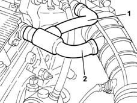
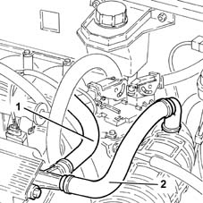
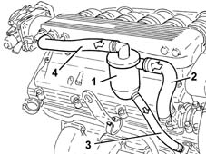
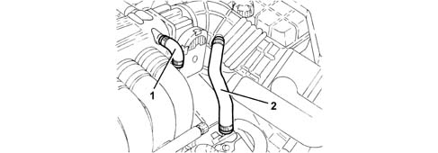
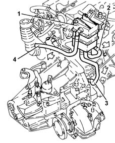
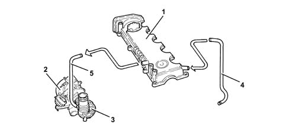
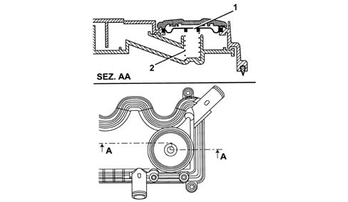
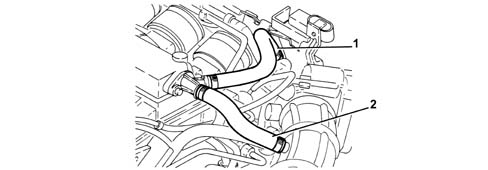
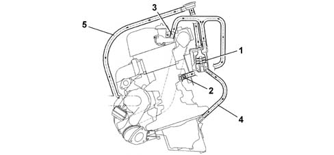

1080D crankcase vapour/gas recirculation system
- Path
- Descriptions > 10 ENGINE > 1080 EXHAUST EMISSION CONTROL SYSTEM > 1080D crankcase vapour/gas recirculation system
- Kind
- system description
- Applies to
- engines: 1.6 TS , 1.8 TS, 2.0 JTS, 2.5 V6, 3.2 V6, 1.9 JTD 8v , 1.9 JTD 16v, 2.0 JTS, 2.4 JTD 10v, 2.4 JTD 20v; all production periods
- Interactive page
- https://sloeber94.github.io/elrnDB-a156/en/#/3232854
Applies to: engines: 1.6 TS ; all production periods
During engine operation, the oil vapours coming from the crankcase are collected in the cylinder head.
Some of the oil vapours condense and fall back into the crankcase; the remaining vapours are sent to the inlet via the pipes (1) and (2).
At idle speed, the oil vapours flow through pipe (1), and at higher loads through pipe (2).

Applies to: engines: 1.6 TS ; all production periods
During engine operation, the oil vapours coming from the crankcase are collected in the cylinder head.
Some of the oil vapours condense and fall back into the crankcase; the remaining vapours are sent to the inlet via the pipes (1) and (2).
At idle speed, the oil vapours flow through pipe (1), and at higher loads through pipe (2).

Applies to: engines: 2.5 V6; all production periods
The oil vapour emissions are controlled by a separator (1) which collects the vapours released in the cylinder heads using a pipe (2).
The difference in temperature between the separator and the oil vapours causes partial condensation.
The condensed vapours are sent to the cylinder head through the pipe (3).
The uncondensed vapours are directed, through pipe (4), to the intake housing.

Applies to: engines: 2.5 V6; all production periods; only with equipment: Euro 3
During engine operation, the oil vapours coming from the crankcase are collected in the cylinder head.
Some of the oil vapours, condensed, drop back into the crankcase; the remaining vapours are sent to the intake through pipes (1) and (2).
At idle speed, the oil vapours flow through the pipe (1); at higher engine loads through the pipe (2).

Applies to: engines: 3.2 V6; all production periods
Operation
During engine operation, the oil vapours coming from the crankcase are collected in the cylinder head.
Some of the oil vapours, condensed, drop back into the crankcase; the remaining vapours are sent to the intake through pipes (1) and (2).
At idle speed, the oil vapours flow through the pipe (1); at higher engine loads through the pipe (2).
Applies to: engines: 1.9 JTD 8v , 2.4 JTD 10v; all production periods
The oil vapour emissions are controlled by a separator (1) which collects the vapours released from the crankcase using the pipe (2).
The difference in temperature between the separator and the oil vapours causes partial condensation.
The condensed vapours are sent, via a pipe, to the crankcase.
The uncondensed vapours are sent, through a pipe (4), to the turbocharger air inlet hose.

Applies to: engines: 1.9 JTD 8v , 2.4 JTD 10v; all production periods; only with equipment: Euro 3
OPERATION
The oil vapour emissions are controlled by a separator (1) (function performed by the cam cover) which collects the vapours released from the crankcase by means of pipe (4).
The difference in temperature between the cam cover and the oil vapours causes partial condensation.
The uncondensed vapours are sent, through a pipe (5), to the turbocharger air inlet hose.

1 - Rocker cover 2 - Turbocharger 3 - Corrugated hose 4 - Oil vapour recovery pipe 5 - Oil vapour recirculation pipe
A regulating valve on the rocker cover, consisting of a spring (1) and diaphragm (2), prevents faulty intake phenomena.
When the vacuum values present under the rocker cover exceed a specified limit, the diaphragm moves downwards and blocks the pipe coming from the crankcase.

Applies to: engines: 2.0 JTS, 2.0 JTS; all production periods
Operation
During engine operation, the oil vapours coming from the oil sump and crankcase are collected in the cam cover, which acts as a separator/condenser. A duct in the crankcase improves vapour recovery.
Some of the oil vapours, condensed, drop back into the crankcase; the remaining vapours are sent to the intake through pipes (1) and (2).
At idle speed, the oil vapours flow through the pipe (1); at higher engine loads through the pipe (2).

Applies to: engines: 1.9 JTD 16v; all production periods
SPECIFCATIONS
Operation
The oil vapour emissions are controlled by a separator (1) which collects the vapours released from the crankcase (2) and from the tappet cover (3). The condensed vapours pass through a pipe (4) returning to the sump, whilst the uncondensed vapours pass through a pipe (5) and are sent to the turbocharger air intake hose.

1 - Oil separator 2 - Crankcase oil vapour outlet 3 - Tappet cover oil vapour outlet 4 - Return to the sump of condensed vapours 5 - Intake vapour pipe 6 - Regulation valve
There is a regulation valve (6) on the intake vapours pipe (5) with a spring that in normal conditions acts on a diaphragm keeping it open, thereby allowing the flow of oil vapours coming from the oil separator.
When the vacuum inside this pipe (5) exceeds the calibration, the spring moves the diaphragm closing the duct from the oil separator thereby preventing the intake of oil from the sump.
Applies to: engines: 2.4 JTD 20v; all production periods
SPECIFCATIONS
Operation
The oil vapour emissions are controlled by a separator (1) which collects the vapours released from the crankcase (2) and from the tappet cover (3). The condensed vapours pass through a pipe (4) returning to the sump, whilst the uncondensed vapours pass through a pipe (5) and are sent to the turbocharger air intake hose.
1. Oil separator 2. Crankcase oil vapour outlet 3. Oil vapour outlet from tappet cover 4. Return to the sump of condensed vapours 5. Intake vapour pipe 6. Regulation valve
There is a regulation valve (6) on the intake vapours pipe (5) with a spring that in normal conditions acts on a diaphragm keeping it open, thereby allowing the flow of oil vapours coming from the oil separator.
When the vacuum inside this pipe (5) exceeds the calibration, the spring moves the diaphragm closing the duct from the oil separator thereby preventing the intake of oil from the sump.